Exceptions happen
Not every transaction stays on the automated path. Some payments require exception handling because of thresholds, missing metadata, suspicious duplicates, or blocked destinations.
A concise presentation page for the Payment Exception Review Status API: infrastructure, platform, application delivery, observability, and real troubleshooting, without demo-bloat or slide clutter.
View GitHub repositoryA regulated payment workflow creates the problem. The service provides visibility. Stage 1 proves the delivery model.
Not every transaction stays on the automated path. Some payments require exception handling because of thresholds, missing metadata, suspicious duplicates, or blocked destinations.
Operators and internal consumers need to know whether a case is pending review, under investigation, approved, or rejected.
The service is delivered as a Spring Boot API on Azure AKS with clear Infrastructure, Platform, and Application ownership, shared observability, and documented troubleshooting.
The result is an observable operating baseline: controlled delivery, team accountability, runtime signals, and evidence strong enough for a technical discussion.
This project connects a real market signal to a concrete build: governed AKS delivery, documented end to end.
Recruiter conversations and Montreal job analysis pointed to the same pattern: regulated teams increasingly expect Azure, Kubernetes, CI/CD, observability, and platform ownership from day one.
A narrow production stack can be valuable, but it can also limit future options when hiring demand shifts. Kubernetes and governed delivery patterns create a more portable base.
Theory gives the map. Practice proves the route. Stage 1 connects both by turning Kubernetes concepts into a governed AKS delivery foundation with CI/CD, observability, FinOps, and operational evidence.
Stage 1 is not presented as a perfect enterprise platform. It is a documented, one-person, 125h34 delivery process with evidence strong enough for a hiring-manager discussion.
Stage 1 is built around a clean separation of responsibility rather than one blended DevOps persona.
Owns Azure foundations, AKS, PostgreSQL base hosting pattern, remote Terraform backend, and cloud access prerequisites.
Owns Kubernetes bootstrap resources, namespace standards, workload delivery conventions, shared observability, and platform dashboards.
Owns the Spring Boot service, Docker image, Helm chart values, probes, metrics exposure, and service troubleshooting.
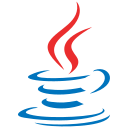
Java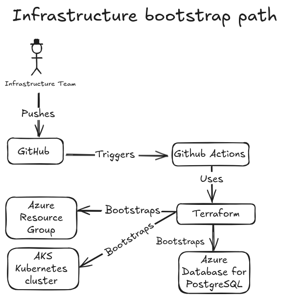

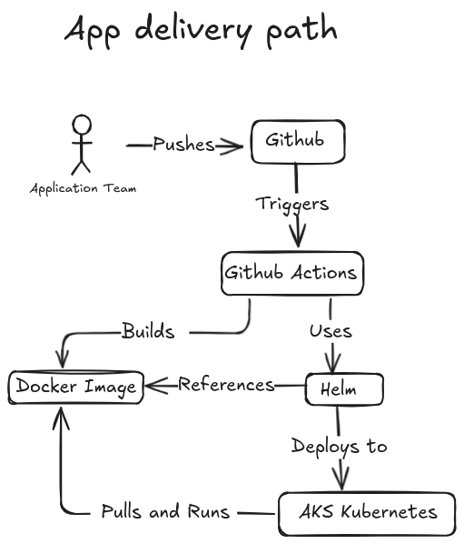
The important thing is not just that the app runs, but that each layer has a clear delivery path and ownership boundary.
Provision Azure and AKS through the Infrastructure-owned Terraform path.
Create the governed Kubernetes application boundary and runtime prerequisites.
Build, push, and deploy the Spring Boot image through the approved Helm workflow.
Install the shared monitoring stack and wire the dashboard delivery model.
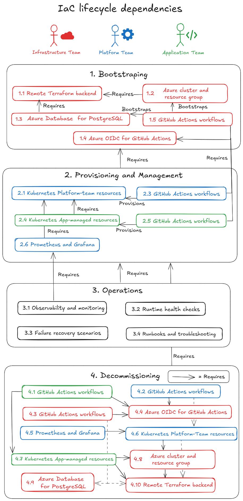
Stage 1 does not stop at deployment. The service exposes a clear operational run path for internal consumers and platform verification.
GET /api/payment-exceptions/service-status
Returns the service status, version, validation mode, and environment-facing delivery metadata.
GET /api/payment-exceptions/{id}/status
Returns the simulated payment exception progression used to prove the business path.
GET /api/payment-exceptions/config-check
Surfaces whether runtime configuration resolves the expected values for the service.
/actuator/*
/actuator/health for readiness and liveness checks/actuator/info for runtime metadata/actuator/prometheus for Prometheus scrapingThis run path is the operational contract of the Stage 1 service. It gives the Application team a business-facing API, gives the Platform team health and scrape endpoints, and gives shared observability a reliable signal source.
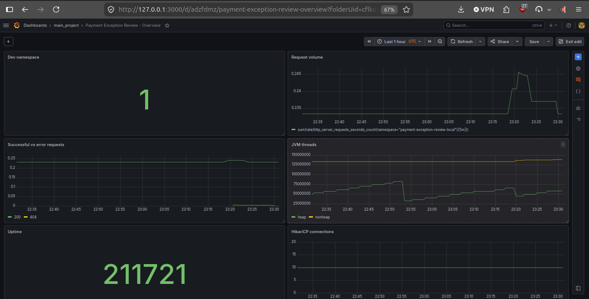
Stage 1 was designed to stay credible without pretending cloud cost does not matter. The repo documents both the technical baseline and the cost-control tradeoffs.
The Azure path is not treated as always-on by default. Local validation exists specifically to reduce cloud spend and shorten iteration time before using AKS.
kind cluster for most iterations avoids carrying that Azure runtime cost during everyday development.The VM-size decision is documented in the ADRs. The repo keeps a stronger default while still acknowledging cheaper fallback options for personal Azure subscriptions.
Standard_D2als_v6 stays the default Stage 1 baseline.Standard_B2als_v2 is documented as the lower-cost fallback when quota and region availability allow it, specifically to make the project more accessible on tighter personal budgets.Standard_B2als_v2 is about $30.51/month per node versus about $65.41/month for Standard_D2als_v6, a roughly 53% node-compute reduction.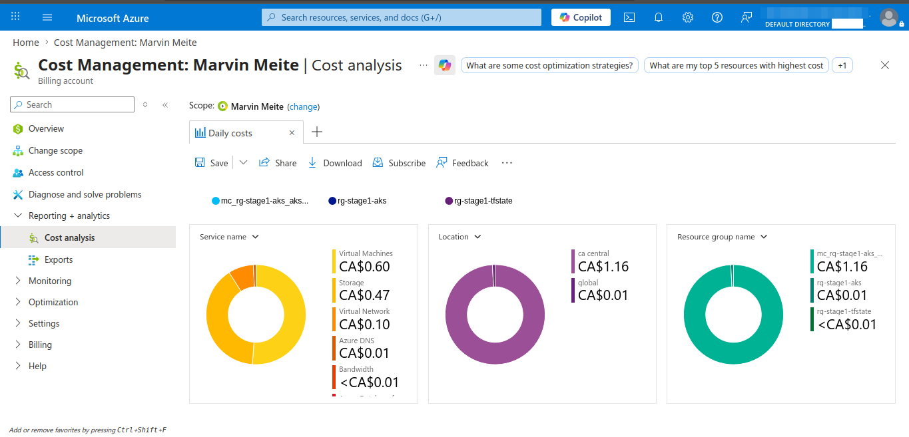
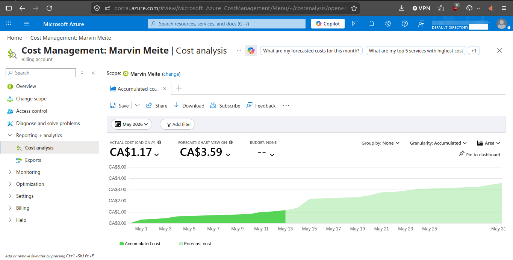
Stage 1 is delivery credibility. Stage 2 is governance and shared-platform maturity. Stage 3 is enterprise architecture scale and hybrid realism.
One stateful regulated internal service delivered safely through a controlled AKS path.
More tenants, stronger controls, centralized secrets, governed dependency updates, GitOps-style reconciliation, and broader operational governance.
Identity maturity, broader observability layering, service-mesh traffic governance, hybrid-cloud credibility, and large-scale governance patterns.
Workflow files stay flat for GitHub, but the naming now makes accountability obvious.
 Infrastructure
Infrastructure Platform
Platform Application
Application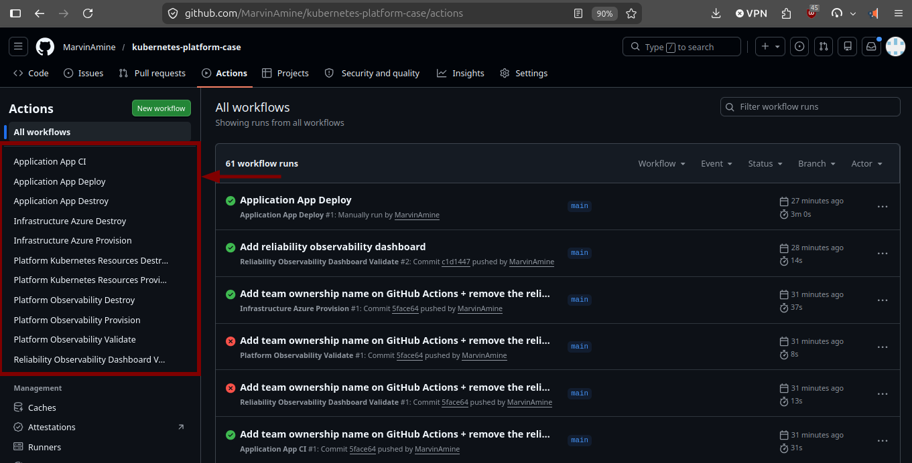
The immediate goal is simple: prove that AKS, Prometheus, and Grafana are up, scraping, and exposing usable platform signals. Stage 2 is where the focus shifts toward richer application metrics, logs, and alerting.
If Grafana can already show Kubernetes, node, and namespace-level signals in AKS, then the cloud foundation, cluster monitoring stack, and shared platform path are working.
Once the platform path is stable, observability becomes more application-centered: request metrics, business-health dashboards, logs, and alerting contracts.
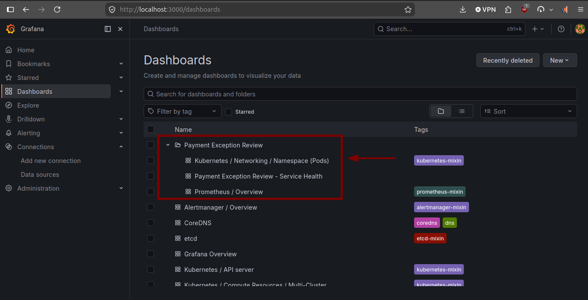
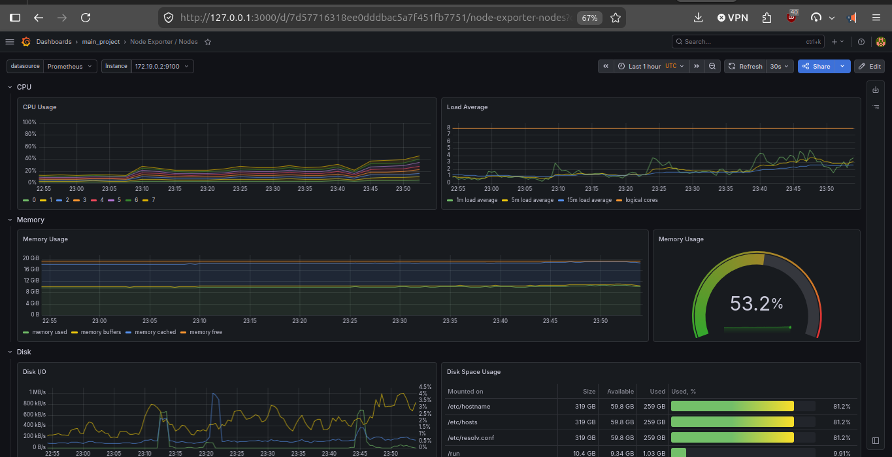
The platform is not assembled manually from the console. Terraform creates the cloud and Kubernetes foundation, Helm reconciles the shared stack, and the dashboards live as versioned JSON in the repo. Kustomize turns them into Kubernetes ConfigMaps, and Grafana mounts them through Helm values.
infrastructure/azure/terraform/aks.tf
resource "azurerm_kubernetes_cluster" "aks" {
name = var.aks_cluster_name
location = azurerm_resource_group.aks.location
resource_group_name = azurerm_resource_group.aks.name
dns_prefix = var.dns_prefix
default_node_pool {
name = "default"
node_count = var.node_count
vm_size = var.vm_size
}
}
infrastructure/azure/terraform/postgresql.tf
resource "azurerm_postgresql_flexible_server" "app" {
name = var.postgres_server_name
resource_group_name = azurerm_resource_group.aks.name
sku_name = var.postgres_sku_name
}platform/kubernetes-resources/observability/grafana/dashboards/payment-exception-review-platform-runtime.json
{
"title": "Payment Exception Review - Platform Runtime",
"uid": "payment-exception-review-platform-runtime",
"timezone": "utc",
"panels": [
{
"title": "Dev namespace",
"type": "stat",
"datasource": {
"type": "prometheus",
"uid": "prometheus"
},
"targets": [
{
"editorMode": "code",
"expr": "up{namespace=\"payment-exception-review-local\"}",
"refId": "A"
}
]
}
]
}platform/kubernetes-resources/observability/grafana/kustomization.yaml
apiVersion: kustomize.config.k8s.io/v1beta1
kind: Kustomization
namespace: monitoring
configMapGenerator:
- name: payment-exception-review-platform-runtime-dashboard
files:
- payment-exception-review-platform-runtime.json=dashboards/payment-exception-review-platform-runtime.json
- name: kubernetes-networking-namespace-pods-curated
files:
- kubernetes-networking-namespace-pods-curated.json=dashboards/kubernetes-networking-namespace-pods-curated.json
generatorOptions:
disableNameSuffixHash: trueplatform/kubernetes-resources/observability/grafana/kube-prometheus-stack-grafana-values.yaml
grafana:
dashboardProviders:
dashboardproviders.yaml:
apiVersion: 1
providers:
- name: payment-exception-review
folder: Payment Exception Review
type: file
options:
path: /var/lib/grafana/dashboards/payment-exception-review
extraConfigmapMounts:
- name: payment-exception-review-platform-runtime
configMap: payment-exception-review-platform-runtime-dashboard
mountPath: /var/lib/grafana/dashboards/payment-exception-review/payment-exception-review-platform-runtime.jsonplatform/kubernetes-resources/observability/scripts/cluster/install_shared_observability_stack.sh
# Custom dashboard ConfigMaps must exist before Grafana starts.
"$SYNC_RELIABILITY_DASHBOARDS_SCRIPT"
kubectl apply -k "$DASHBOARD_KUSTOMIZE_DIR"
HELM_VALUES_ARGS=(
-f "$VALUES_FILE_PROMETHEUS"
-f "$VALUES_FILE_GRAFANA"
-f "$VALUES_FILE_ALERTMANAGER"
-f "$TEMP_VALUES"
)
helm upgrade --install "$RELEASE_NAME" \
prometheus-community/kube-prometheus-stack \
--namespace "$MONITORING_NAMESPACE" \
--create-namespace \
"${HELM_VALUES_ARGS[@]}" \
--wait \
--timeout "$OBSERVABILITY_HELM_TIMEOUT"The strongest operational signal in this repo is that the real failure modes were captured and explained.
The release did not merely take longer than expected. Helm stayed in pending-upgrade,
returned context deadline exceeded, and Grafana pods were still not initializing.
STATUS: pending-upgrade
Error: context deadline exceeded
kubectl get pods -n monitoring
kube-prometheus-stack-grafana-... 0/3 PodInitializing
Prometheus, Alertmanager, and the operator were healthy, but Grafana stayed stuck in
Init:CrashLoopBackOff. The init container logs showed permission errors under
/var/lib/grafana.
chown: /var/lib/grafana/pdf: Permission denied
chown: /var/lib/grafana/png: Permission denied
chown: /var/lib/grafana/csv: Permission denied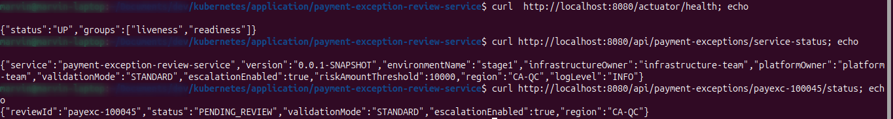
Executive summary: one governed delivery path, one replayable bootstrap, one measurable cloud-cost story, and one credible internal service running on AKS.
The core result is operational simplicity with enterprise structure: more than 125 hours of recorded Stage 1 build work compressed into a replayable path that bootstraps the Terraform backend, AKS foundation, Kubernetes runtime, and shared observability baseline; validates the service path; then tears the cloud runtime down when it is not needed.
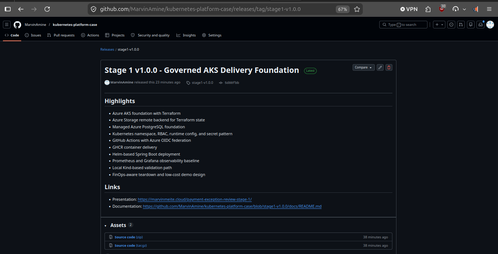
The release points to stage1-v1.0.0 and commit 5d88fbb, so the proof is stable even after Stage 2 evolves the repository.
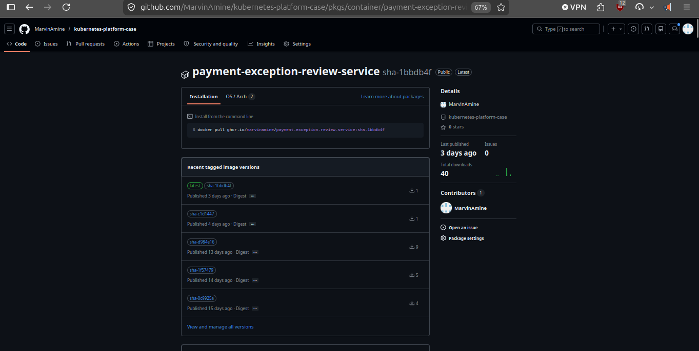
The container package is public, versioned by image tags, and shows 40 downloads, proving the CI path produced a reusable artifact.